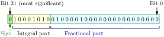

The famous fast inverse square root is some mysterious code not written by programming legend John Carmack to calculate a fast approximation of $1/\sqrt{x}$:
// Code from Quake 3 Arena.
float Q_rsqrt( float number )
{
long i;
float x2, y;
const float threehalfs = 1.5F;
x2 = number * 0.5F;
y = number;
i = * ( long * ) &y; // evil floating point bit level hacking
i = 0x5f3759df - ( i >> 1 ); // what the fuck?
y = * ( float * ) &i;
y = y * ( threehalfs - ( x2 * y * y ) ); // 1st iteration
// y = y * ( threehalfs - ( x2 * y * y ) ); // 2nd iteration, this can be removed
return y;
}
Games calculate square roots and inverse square roots all the time to find the lengths of vectors and to normalise them, but using the sqrt() function is very slow. The code above finds an approximate result much more quickly through some mysterious integer magic. I was curious how it works but the Wikipedia page describing it is so badly written that it was easier to figure it out from scratch. Here's what I found.
The code works by computing an initial approximation to $1/\sqrt{x}$ (which can also be written as $x^{-1/2}$) and then refining it using one or two iterations of the Newton-Raphson method. If you aren't familiar with the Newton-Raphson method, don't worry - it isn't very complicated and also isn't the clever bit so you can ignore it if you like. There are a ton of good visual explanations on the web (e.g. this one) so I won't go into it here.
The clever, mysterious line is this one:
i = 0x5f3759df - ( i >> 1 ); // what the fuck?
The heart of the method is bit manipulation of floating point numbers, so we need to know how they work. But the method is simpler to explain using a weird number format that nobody uses.
Suppose we have 32 bits with which to represent a real number $x$.
We can use the upper bit for the sign (0 for positive numbers, 1 for negative numbers), and the remaining bits to represent a positive real number. Using a dedicated bit to represent sign is called sign and magnitude. Since we cannot take the square root of a negative number we can assume the sign bit is always 0.
We can interpret the next 8 bits as the integral part of a value, and the remaining bits are the fractional part. In this case the value is 10001010.0100001 in binary (we can elide trailing zeros just like with decimal numbers). This corresponds to a decimal value of $138.2578125.$ We can use this value which I will denote $f$ to represent numbers in a few different ways. If we treat the 31-bit value as an unsigned integer $u$ (i.e. $u=\mathrm{0b01000101001000010000000000000000}=1159790592$) then
We can just set $x=f$, i.e. we consider 01000101 to represent the number $138.2578125.$ This format is called fixed point, because the decimal point is always always fixed at the same place. It has some niche uses but isn't commonly used because of its major weakness: the range of values it can represent is very limited: only up to 128.9999999 in this example.
We can increase the range of values that we can represent by exponentiating the fixed point value, i.e. $f=2^{x-127}$. So, instead of considering 01000101 to represent the value $138.2578125$ we say it represents the number $2^{138.2578125 - 127} = 2448.7.$ This is called the Logarithmic Number System (LNS). The $^{-127}$ offset is used so we can represent numbers smaller than $1.$ Now we can represent numbers up to $2^{128.9999999}.$ We do lose some nice properties though, the most critical is that addition and subtraction are difficult to implement with this number system.
To make addition and subtraction easier to implement we can treat the integral and fractional parts of $f$ differently, let's call them $f_e$ and $f_m$. We make the integral part logarithmic, and the fractional part linear using $x=2^{f_e - 127} \times (1 + f_m)$. In our example $2^{138 - 127} \times 1.2578125 = 2576.$ This means the exponent of $2$ is always integral, which computers can easily deal with. This format is called floating point because the decimal point floats around (don't worry about it). Virtually all code uses this format for real numbers, and almost all processors have hardware support for it. This is also why real numbers in C are float.
To summarise, the same bit pattern can mean three different numbers depending on the number format we are using:
| Bit pattern | Number format | Value |
|---|---|---|
01000101 |
Fixed point | $\textcolor{blue}{138}.\textcolor{red}{2578125}$ |
01000101 |
LNS | $2^{\textcolor{blue}{138}.\textcolor{red}{2578125} - 127} = 2448.7$ |
01000101 |
Floating point | $2^{\textcolor{blue}{138} - 127} \times 1.\textcolor{red}{2578125} = 2576$ |
If we are using LNS numbers, we do not need a trick to calculate the inverse square root - we can easily calculate it exactly. Recall that the LNS interpretation of an unsigned integer $u$ is
$$2^{u/2^{23} - 127}$$The inverse square root of a value $2^x$ is
$$(2^x)^{-1/2} = 2^{-x/2}$$So to find the unsigned integer $q$ that would give the inverse square root, we need to solve
$$2^{q/2^{23} - 127} = 2^{-(u/2^{23} - 127)/2}$$Simplifying this gives
$$q/2^{23} - 127 = -(u/2^{23} - 127)/2$$ $$q/2^{23} - 127 = -(u/2^{23})/2 + 127/2$$ $$q/2^{23} = 190.5 - (u/2^{23})/2$$ $$q = 190.5 \times 2^{23} - u/2$$In code form this is
q = 1598029824 - u/2;
Or if I convert that constant to hex, and use a bit shift to divide by 2
q = 0x5F400000 - u >> 1;
Look familiar? It's pretty close to the mystical line we saw before! "But", I imagine you ask, "this is for these weird LNS numbers! What about actual floating point numbers?"
The formula above calculates an exact inverse square root for LNS numbers. The trick is that floating point numbers are actually pretty similar to LNS numbers! They never differ by more than a factor of $\frac{2}{e\log 2} = 1.0615.$ The following graph shows the value of an LNS number when reinterpreted as a float. In other words the value we get when we take the bit pattern of an LNS number and work out what value those bits represent if they were a floating point number. As you can see they are pretty close!
Another way to look at the difference between LNS and floating point is to vary $f$ and plot the LNS and floating point results.
You can see how LNS is fully logarithmic between integer powers of 2, but floating point is linear between those points. All this is just to say that LNS and floating point are pretty similar, so the exact inverse square root of an LNS number is still pretty close to the inverse square root of a floating point number! But why does the code use 0x5f3759df instead of 0x5F400000?
We have a calculation that gives an exact result with LNS numbers, and an approximate result with floating point. How good is the approximation? We can plot the ratio of the approximate output to the correct output for different inputs. A log scale is used so that being out by a constant factor (e.g. $\times 2$ or $\div 2$) looks the same. The green line shows the result after the initial approximation, the blue line shows the result after one iteration of Newton-Raphson. Closer to 1 (the red line) is better.
| Subtractant: |
|
Using a subtractant (a word I just made up) of $190.5$ (0x5F400000) you can see that the initial approximation always gives a value that is too high (the green line is above the red line). This is because floating point numbers are always greater than the corresponding LNS number. The estimate is somewhere between $1$ and $1.09$ times the actual answer. If we could multiply that output by a constant factor of around $0.96$ then we could balance the error above and below $1$, which would reduce the maximum error.
This is easy to do just by reducing the subtractant by a small amount. I could go into detail, but you can easily see the effect by sliding the slider above. See how small you can make the maximum error, and then click the "Carmack" button to see the value Quake 3 uses.
It's pretty close to optimal! But... maybe there's a way we can do better. Notice that the output after one iteration of Newton-Raphson is still always too small (the blue line is below the red line). Is there a way we could multiply that by some constant factor slightly more than $1$? Yes! All we have to do is modify the 0.5 in the original code a little.
Try playing around with the "One half" slider. In fact, while we're at it, what happens if we change the 1.5 in the code too and feed the whole thing into a hacked together optimisation program that I wrote? We can do even slightly better! Click the extra buttons to see the optimisation results when two or three parameters are allowed to change.
That's basically it. To summarise, using LNS numbers we can calculate an exact solution using 0x5F400000. LNS numbers are pretty close to floating point numbers, so the same code gives an approximate solution for floating point. But floating point numbers are always greater than LNS numbers so there is a bias in the approximation that can be corrected by subtracting a small amount from 0x5F400000.
Let me know if anything wasn't clear or I made a mistake. Read on for the answers to a few extra questions I'm pretending you have asked.
Yes! I started doing this, but because there are 3 or 4 parts to the error curve it gets very tedious very quickly. Numerical optimisation is much much easier.
Again, yes! Instead of this:
$$q=190.5 - \frac{u}{2}$$we can do this
$$q=\frac{381 - u}{2}$$however it doesn't give as good results.
Yes! This trivially works for any function of this form
$$x^{\pm 2^n}$$Where $n$ is an integer (positive or negative). E.g. $x^{1/2}$, $x^{-8}$, $x^2$, though you probably wouldn't use it for positive exponents since you can just use multiplication to get an exact answer.
Can it be used for things like the cube root? Maybe. We need to solve:
$$2^{q/2^{23} - 127} = 2^{(u/2^{23} - 127)/3}$$ $$q/2^{23} - 127 = \frac{u/2^{23} - 127}{3}$$ $$q/2^{23} = \frac{u/2^{23} - 127}{3} + 127$$ $$q = \frac{u}{3} + \frac{2\times 127}{3} * 2^{23} = \frac{u}{3} + \mathrm{0x2A555555}$$So our (non-optimised; exercise for the reader) magic line would look like this (not tested!)
i = 0x2A555555 + ( i / 3 ); // this is trivial!
Integer division is not as fast as a bit shift, but because we are dividing by a constant most compilers are able to optimise it into multiplication by some magic code that...